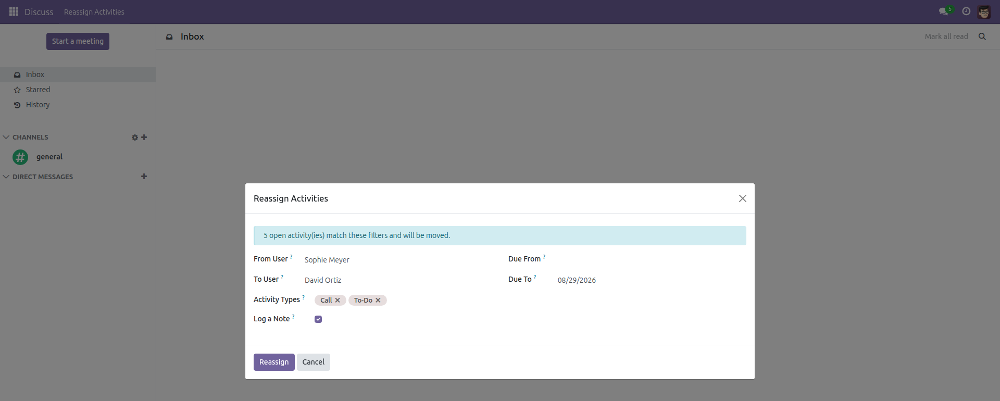
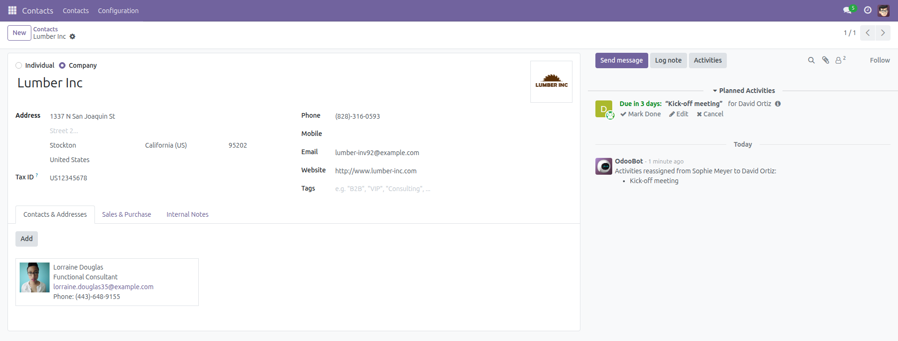

Reassign Activities in Bulk
One person leaves — their to-dos move in a single click.
When a colleague resigns, changes team or simply goes on holiday, every open activity stays pinned to their name: to-dos, calls, meetings, scheduled follow-ups. Odoo only lets you move them one record at a time. This module adds a Reassign Activities wizard: pick the person leaving, pick the person taking over, see how many activities match, and hand them all over at once.
Free and open source (LGPL-3), Odoo 14.0 through 19.0.
- One action — every open activity of a user moves to a colleague in a single click.
- Precise filters — narrow the hand-over by activity type and by due-date range.
- Preview before you commit — the wizard shows how many activities match while you change the filters.
- Audit trail — a note is logged in the chatter of every affected document, listing what moved and between whom.
- Never touches finished work — completed and cancelled activities are always left alone.
- Respects access rights — only activities the current user is allowed to modify are ever reassigned; no rules are bypassed.
- Safe no-op — reassigning someone to themselves changes nothing instead of flooding the chatter.
- Works after the leaver is archived — an archived user can still be chosen as the source, which is exactly when a hand-over is needed.
Screenshots

Pick the user leaving and the user taking over, optionally filter by activity type and due date — the wizard counts the matching open activities before anything is moved.

Each affected document keeps a note of the hand-over, and the activity now shows the new assignee.
Installation
- Copy the module folder into your Odoo add-ons path.
- Open Apps, click Update Apps List, then search for Reassign Activities in Bulk.
- Click Install. Only the standard
mail module is required.
Configuration
- Nothing to configure — the wizard is ready as soon as the module is installed.
- The menu is available to every internal user, under Discuss → Reassign Activities.
- Access is enforced by Odoo itself: a user only ever moves the activities they are allowed to modify, so no extra rights have to be granted.
Usage
- Open Discuss → Reassign Activities.
- In From User, choose the person whose activities have to be handed over; in To User, choose the person taking them.
- Optionally restrict the move with Activity Types (leave empty for all types) and with the Due From / Due To range.
- The banner at the top of the wizard shows how many open activities currently match; it updates as you change the filters.
- Leave Log a Note ticked to keep a trace in the chatter of every affected document, then click Reassign.
- A confirmation tells you exactly how many activities were moved. Each one now appears in the new assignee's to-do list.
Version notes
- From 17.0 on, Odoo keeps completed activities as archived records; the wizard skips them, exactly as it skips the ones older series delete.
- Up to Odoo 16.0, Odoo itself refuses to assign an activity to someone who cannot open the related document, and it refuses the whole batch. The wizard reports that refusal instead of moving part of the selection; from 17.0 on, Odoo dropped that check.
License: LGPL-3 · Source on GitHub · Issues and contributions welcome.